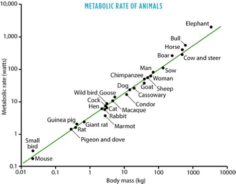
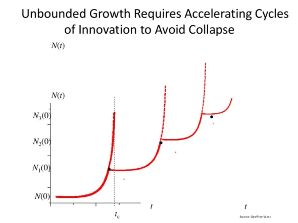

Wybrane zagadnienia - metabolizm a masa ciała
Fakt, że tempo metabolizmu skaluje się jako trzy czwarte potęgi masy ciała (M) zarówno w organizmach jednokomórkowych,
jak i wielokomórkowych, sugeruje, że te same zasady projektowania biologicznego działają na wielu poziomach
organizacji. Wykorzystujemy ogólny model fraktalnych sieci dystrybucji, a także dane dotyczące transformacji
energii u ssaków, aby analizować i przewidywać skalowanie allometryczne metabolizmu tlenowego w szerokim zakresie,
obejmującym 27 rzędów wielkości masy i cztery poziomy organizacji: organizmy indywidualne, pojedyncze komórki,
kompletne mitochondria oraz cząsteczki enzymów. Wykazujemy, że podczas gdy tempo metabolizmu komórkowego in vivo
skaluje się jako M-1/4, to tempo komórek w kulturze konwerguje do jednej przewidywanej wartości dla wszystkich
ssaków, niezależnie od ich wielkości.

Ponadto, jedno prawo skalowania allometrycznego o potędze trzy czwarte
charakteryzuje podstawowe tempo metabolizmu izolowanych komórek ssaków, mitochondriów i cząsteczek kompleksu
oddechowego; skaluje się ono i jest nieodróżnialne od zależności skalowania dla organizmów jednokomórkowych. Ta
obserwacja sugeruje, że tlenowa transformacja energii na wszystkich poziomach organizacji biologicznej jest
ograniczona przez transport materiałów przez hierarchiczne, fraktalne sieci o właściwościach określonych przez model.
Pokazujemy, jak można obliczyć masę najmniejszego ssaka (ok. 1 g), a także jak można zrozumieć obserwowaną liczbę
i gęstość mitochondriów oraz kompleksów oddechowych w komórkach ssaków. Rozszerzenie teoretycznych i empirycznych
analiz skalowania na poziomy suborganizmalne potencjalnie ma istotne implikacje dla struktury i funkcji komórkowej,
jak również dla metabolicznych podstaw starzenia się.
Miasta jako złożone systemy
Badania SFI dotyczące miast, skalowania i zrównoważonego rozwoju tworzą interdyscyplinarne podejście i ilościową
syntezę aspektów organizacyjnych i dynamicznych ludzkich organizacji społecznych, ze szczególnym naciskiem na
miasta.
Łączymy różne perspektywy dyscyplinarne, poszukując podobnych wskaźników dla wielkości populacji miejskiej —
analizy skalowania — i innych zmiennych, które charakteryzują całe systemy miejskie.
Ważnym celem tego obszaru badań jest opracowanie teoretycznych wniosków dotyczących miast, które mogą dostarczyć
ilościowych analiz ich długoterminowej zrównoważoności w kontekście wzajemnego oddziaływania innowacji,
przywłaszczania zasobów i konsumpcji oraz struktury ich aktywności społecznej i gospodarczej.
Projekt ten łączy urbanistów, ekonomistów, socjologów, psychologów społecznych, antropologów oraz teoretyków
systemów złożonych, aby wygenerować zintegrowane i ilościowe zrozumienie miast. Kluczowe obszary badawcze
obejmują: identyfikację ogólnych wzorców skalowania w miejskiej infrastrukturze i dynamice na całym świecie;
ilościowe zrozumienie sieci dystrybucji zasobów w miastach i ich interakcji z tkanką społeczno-ekonomiczną miasta;
badanie zagadnień przyspieszenia czasowego i gęstości przestrzennej oraz stworzenie rygorystycznych ram
zrozumienia długoterminowej dynamiki systemów miejskich.
Przyspieszające "bieżnie" innowacji
Eksponencjalny, nieograniczony wzrost (czyli superliniowe prawo potęgowe) jest właściwie oczywistością
w świecie ludzkim, a Geoffrey West opisuje, jak wynika to z dynamiki interakcji społecznych w swojej
książce Scale.
Do tej pory unikaliśmy nieuniknionego załamania dzięki innowacjom, a te są przyspieszane poprzez eksponencjalny
wzrost liczby ludzi. Dlatego Malthus i Klub Rzymski mylili się w swoich prognozach dotyczących upadku.

Jednak ten argument, że „innowacja to klucz”, w końcu się rozpada. Kupuje nam czas, ale nie nieskończony czas.
Jak pokazano na wykresie Westa, innowacja musi być coraz szybsza, aby uniknąć załamania. I to nie tylko
drobna innowacja, ale dalekosiężna, na miarę wynalezienia maszyny parowej lub internetu. Skaczesz z
jednej bieżni, zanim wyrzuci cię przez tylną ścianę, tylko po to, by wylądować na kolejnej, która porusza
się jeszcze szybciej. I tak w kółko.